Why this chapter
In chapter 1, everything was constant. Yet no useful signal is: a sensor, a microphone, an antenna produce quantities that vary in time. This chapter takes a simple case study, the RC circuit driven by a square wave, and approaches it by four methods (measurement, differential equation, numerical calculation, Fourier and phasors), extended by the Laplace transform. It then shows where systematic analysis stops (the relaxation oscillator) and how feedback makes it possible to abstract a system.
Chapter outline
| § | Content |
|---|---|
| 2.1 | Signals that vary in time |
| 2.2 | An engineer’s question: the RC circuit and the square wave |
| 2.3 | Methods 1 and 2: measure, then write the equation |
| 2.4 | Method 3: advancing step by step, numerical calculation |
| 2.5 | Method 4: Fourier, sinusoids and phasors |
| 2.6 | Time, frequency, transient, steady state: and the Laplace transform |
| 2.7 | Which method to choose? The overview |
| 2.8 | When analysis stops being systematic: the relaxation oscillator |
| 2.9 | Abstracting through feedback |
| 2.10 | Challenge: go and look at the NE555 |
| 2.11 | Roadmap: time dependence |
| 2.12 | Summary |
| 2.13 | Exercises |
Learning objectives
By the end of this chapter, you will be able to:
ask, in front of a circuit whose quantities vary in time, the question of the method of analysis before calculating;
have an overview of four methods (measurement, differential equation, numerical calculation, Fourier and phasors) and of the trade-off that guides their choice;
predict qualitatively the response of an RC circuit to a square wave according to the ratio between the period and
; set up and solve the differential equation of an RC circuit, then apply Euler’s method;
calculate
of an RC circuit, plot its Bode diagram and interpret the cut-off frequency; distinguish the representation (time or frequency) from the regime (transient or steady state), place the Laplace transform on this map, say when it is needed, and read the transient and the steady state in
; recognise that a circuit with thresholds escapes systematic analysis: explain the relaxation oscillator as a succession of states separated by thresholds, and deduce its period;
understand that feedback is an abstraction technique, write the transfer function of a loop and read its stability from the position of the poles;
place a situation on the roadmap: systematic analysis or incremental inspection.
Notation
| Symbol | Meaning |
|---|---|
| instantaneous voltage (general case) and current | |
| value of a DC signal; amplitude, angular frequency, frequency and phase of a sinusoid | |
| amplitude of a step or of a square wave | |
| input voltage, output voltage, capacitor voltage and current | |
| time constant (relaxation time); step of the numerical calculation | |
| phasor |
|
| transfer function, gain in decibels, cut-off angular frequency and cut-off frequency | |
| Laplace variable; transform of |
|
| input voltages of the operational amplifier, saturation voltage | |
| period of a signal (oscillator: |
|
| gain of the forward path, its low-frequency value, its pole | |
| fraction of the output fed back to the input (feedback); |
|
| closed-loop transfer function, |
|
| resonant angular frequency of an |
2.1Signals that vary in time
In chapter 1, we learnt to analyse a circuit whose voltages and currents are constant. But no useful signal stays constant: a sensor, a microphone, an antenna produce quantities that vary. Before touching the slightest circuit, let us therefore look at signals. Three of them are enough to fix ideas.
The DC signal (DC1) is the simplest:
The square wave looks like no sinusoid. Yet a periodic, symmetric square wave of amplitude
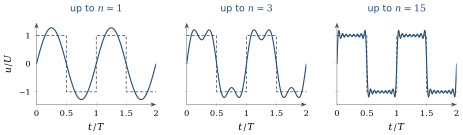
2.2An engineer’s question: the RC circuit and the square wave
Take a classic circuit: a resistor and a capacitor in series, driven by a square wave (figure 2.2). The question the engineer asks is simple to state:
The engineer’s question
How can the behaviour of this circuit be analysed systematically?
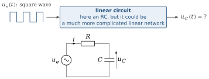
Let us note right away that the RC circuit is a case study. We could have chosen a much more complicated linear network; the methods that follow would not change. The RC circuit has one advantage: it is simple enough for us to see everything that happens.
What makes this circuit different from those of chapter 1 is the capacitor. Its current depends on the rate of change of its voltage:
Challenge: food for thought
Why can the voltage of a capacitor not change abruptly in a real circuit? What happens if
To answer the question asked, there are four methods. We go through them in order, always on this same circuit: measure, write the differential equation, calculate step by step, go through Fourier.
2.3Methods 1 and 2: measure, then write the equation
Method 1: measure
The engineer’s first reaction is often the right one: before calculating, look. On the oscilloscope, we observe
But let us be aware of what this method does not give. A measurement answers for one circuit, one frequency, one set of values; it does not provide the law. And it assumes that the circuit already exists on the bench. The engineer therefore cannot always choose method 1: they must be able to turn to the second.
Method 2: the differential equation
Let us write the loop law,
We know the usual solutions of this type of equation: they are exponentials. Let us therefore substitute
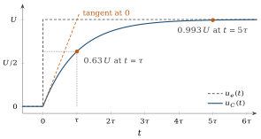
The square wave is only a succession of steps: at each edge, the capacitor starts again from the value it had reached and relaxes towards the new value of the input, always with the same constant
Challenge
Depending on whether the period
The problem is solved, and solved exactly. But that is because the equation had an obvious solution.
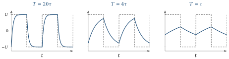
The RC circuit driven by a square wave
Vary τ/T. The square input ±U (dotted) and uC (blue) are overlaid over three periods, in periodic steady state. Tick the box to also see the start from uC(0) = 0: the transient, then the steady state.
In steady state, uC swings between ±U·tanh(T/4τ): each half-period is a piece of the step response of figure 2.3.
2.4Method 3: advancing step by step, numerical calculation
In general, the solution is not obvious: complicated sources, larger circuits, elements that no longer behave linearly. We do not give up for all that: we calculate the response point by point. The principle is to replace the derivative by a variation over a small step
Take
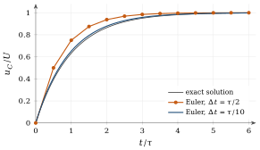
Why show this on such a simple case? Because it is, in minimal form, the machinery of the numerical solvers used by circuit simulators. The aim is not to calculate an RC circuit this way, but to see laid bare what happens inside the tool. What to remember: a small step costs computation and gives accuracy; a large step is fast but drifts away from reality. This is already a trade-off.
2.5Method 4: Fourier, sinusoids and phasors
The last method takes up the idea of section 2.1. A periodic signal is a sum of sinusoids. Now the circuit is linear: since chapter 1 (section 1.6), we know the superposition theorem. The response to a sum is the sum of the responses. We can therefore treat each sinusoid separately, then add them to rebuild the signal. All we need is to know what the circuit does to one sinusoid.
Let us therefore apply a sinusoidal generator
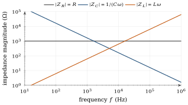
The transfer function
The quantity
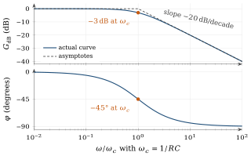
Let us come back to the square wave. It is made of sinusoids of frequencies
The same RC circuit (R = 1 kΩ, C = 100 nF, τ = 100 µs) driven by a square wave: the time response (method 2) and the Bode plot (method 4), with the fundamental and the harmonics of the square wave placed on the gain curve.
- T = 20τ: the capacitor follows, the fundamental is far below fc.
- T = τ: uC is only a small triangle around U/2; all the harmonics lie beyond fc.
- At f = fc: gain −3 dB, phase −45°.
2.6Time, frequency, transient, steady state: and the Laplace transform
In speaking of time and frequency, we have used two words that do not mean the same thing as “transient regime” and “steady state”. The confusion is common; let us avoid it.
The representation (time or frequency) is a way of describing the same system:
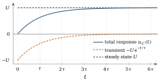
Since the two axes are independent, they define four boxes (figure 2.9).
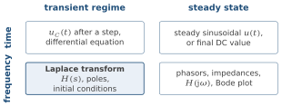
Let us read the map row by row. Phasors occupy the bottom-right box: they assume that the transient has disappeared, and therefore say nothing about what happens just after switching. Conversely, describing a signal as a function of time is not the same as describing a transient: an established
The bottom-left box: the Laplace transform
This is the role of the Laplace transform. You have already met it in mathematics4; we do not derive it again, we place it on the map. It associates with
Let us take the step of amplitude
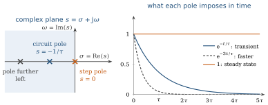
Key points: where and when to use Laplace
When it is needed: the response of a linear circuit to switching, a step or an impulse, especially with non-zero initial conditions; circuits of order two or more (RLC), where the differential equation becomes heavy to solve by hand; the study of stability, because poles on the left give a transient that dies out and poles on the right a transient that diverges; closed-loop systems, in regulation and control, where
When it does not apply: as soon as the circuit is no longer linear. The comparator of the relaxation oscillator (section 2.8) is an example: each state is a linear circuit that Laplace could handle, but the switching between states does not fit within its framework.
2.7Which method to choose? The overview
Our aim was not to solve the RC circuit. It was to give you an overview of time-domain analysis techniques. Table 2.1 sets the four methods side by side, together with their extension, the Laplace transform.
| Method | What it gives | What it requires | Its limit |
|---|---|---|---|
| 1. Measurement | the real behaviour, all effects included | the circuit on the bench, an instrument | a single case, no general law |
| 2. Differential equation | the exact expression, the influence of |
a known or simple solution | difficult as soon as sources and network become complicated |
| 3. Numerical calculation | a point-by-point response for almost any circuit | a step |
approximate, no analytical form |
| 4. Fourier and phasors | gain and phase at each frequency, filtering | a linear circuit | mainly the sinusoidal steady state |
| Laplace (extension of method 4) | transient and steady state in a single algebra, poles, stability, feedback loops | a linear circuit, knowing the transform | not applicable as such to thresholds and nonlinearities |
We therefore do not systematically choose the most accurate method: there is a trade-off between accuracy, cost, available time and what we want to know.
Key points
Each method is adequate depending on the need. And as long as the components remain linear, the response of a circuit, even a very large one, does not leave the framework of these methods: it is a systematic analysis.
2.8When analysis stops being systematic: the relaxation oscillator
Everything above rested on one assumption: the components are linear. Let us look at a circuit where the systematic method no longer applies. So far, we have studied the response of a circuit to an excitation. Here is a circuit that produces a periodic signal by itself: an oscillator. It uses a component we have not met yet, the operational amplifier; we need only its behaviour seen from the outside.
Key points: the operational amplifier, seen as a black box
The operational amplifier (op amp) is an integrated circuit with two inputs,
Linear operation. If negative feedback brings the output back to the
input, any difference makes vary in the direction that reduces this difference. The output settles without saturating, and the remaining difference is , 100 µV at most: on the scale of the circuit, . This is not a rule to be laid down in advance, but a consequence, valid only as long as the output is not saturated. Comparator mode. If the feedback is positive, or if there is none, nothing brings the difference back towards zero; positive feedback even amplifies it (section 2.9). The output goes to its limit and the op amp becomes a comparator:
if , and if . Here, and are in general different.
It is therefore the circuit, and not the op amp, that sets the regime. In the oscillator that follows, the op amp operates as a comparator: it is the key element of what follows.
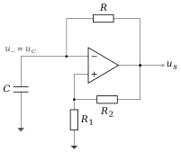
The circuit of figure 2.11 has two feedback paths. The one through
The two feedback paths coexist: which one sets the regime? Let us place ourselves in the state where
Let us now try to write one equation valid for all
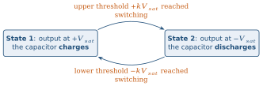
A half-cycle lasts the time it takes
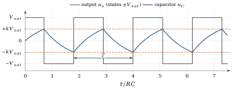
But do not get attached to this formula (figure 2.13): the lesson is not the circuit, the lesson is the approach.
Key points: the lesson of the oscillator, a state of mind
It is not always possible to know the behaviour of a circuit in advance through a systematic analysis using our mathematical tools. Sometimes an incremental inspection is necessary: we follow the circuit state by state.
As soon as analog linear behaviour (the RC circuit) is mixed with thresholds (a digital-like behaviour, with two states), the analysis is no longer systematic. A complex module cannot be tackled systematically.
The period as a function of k
2.9Abstracting through feedback
If we had to analyse a complex system transistor by transistor, we would never finish. What can be done? From this example, let us deduce that there are abstraction techniques, and that feedback is one of them. Rather than opening the box, we describe its behaviour through the loop: a fraction
With negative feedback, this fraction is subtracted from the input: the system tends to stabilise. With positive feedback, it is added: a small variation is reinforced, which creates thresholds and switching.
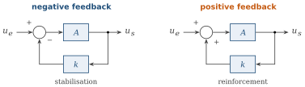
This technique is widely used in regulation and control (the thermostat, the voltage regulator, motor speed control) and in oscillators. You will meet it again in the next module, in particular with the operational amplifier.
Laplace makes feedback workable
Writing the differential equation of a closed-loop system is tedious: the output depends on the input, but also on itself. With the Laplace transform, each block becomes a transfer function and the loop becomes algebra. For the negative feedback of figure 2.14,
Stability. The poles of
are the roots of . A pole on the left gives an exponential that dies out, a pole on the right an exponential that diverges. Stability is judged by looking at where the poles are, or on the Bode diagram of the loop , without solving any differential equation. Accuracy. If
, then : the behaviour is set by the feedback network (resistors), not by the amplifier , whose values vary from one unit to another. Abstraction. To write
, we do not need to know what is inside block , only its transfer function.
One example is enough. Take a single-pole amplifier,
With positive feedback,
Key points
A circuit can be understood as a succession of states and transitions between these states.
2.10Challenge: go and look at the NE555
The NE555 is an excellent circuit to study after the relaxation oscillator. The aim is not to memorise its internal diagram, but to recognise in it the functions we have just seen.
Challenge
Look up the internal block diagram of the NE555 and identify: the comparators and the voltage references; the thresholds and the flip-flop; the discharge transistor and the external capacitor; the feedback path. Then follow its operation: charge, threshold, switching, discharge, other threshold, switching.
The NE555 brings together several notions of the chapter: capacitor, evolution in time, threshold, comparator, switching, feedback, oscillation.
A question left open
Can the overall operation of the NE555 be understood without knowing the transistor-by-transistor detail of its internal circuit?
This is exactly the kind of question the engineer must be able to ask.
2.11Roadmap: time dependence
Let us gather the chapter on a single map (figure 2.15). In front of a signal that varies in time, the first question is not “which equation?”, but “am I in the systematic case?”
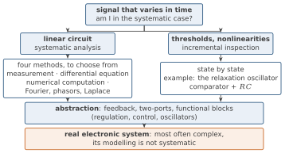
And now?
In reality, an electronic system is almost always a complex system, and its modelling is not systematic. What you take away from this chapter is a map: knowing which method to choose, and daring to use incremental inspection when systematic analysis stops. The components we will study next, starting with the diode, are nonlinear. We will need the tangent of chapter 1 and the methods of this chapter to handle them.
2.12Summary
A dynamic circuit is described by the equation
; the RC circuit is only a case study. Four methods analyse it: measurement, differential equation, numerical calculation, Fourier and phasors. Each one is adequate depending on the need.
Representation (time or frequency) and regime (transient or steady state) are two independent distinctions; phasors cover the steady state, Laplace extends to the transient.
As long as the components are linear, the analysis remains systematic. With thresholds, it becomes incremental.
Feedback is an abstraction technique, used in regulation, control and oscillators; Laplace makes it workable:
, the poles give the stability.
2.13Exercises
The exercises for this chapter are collected in the tutorial problem book, in the section “Course application exercises” of chapter 2; their answers are in the tutorial solutions book, in the same place.